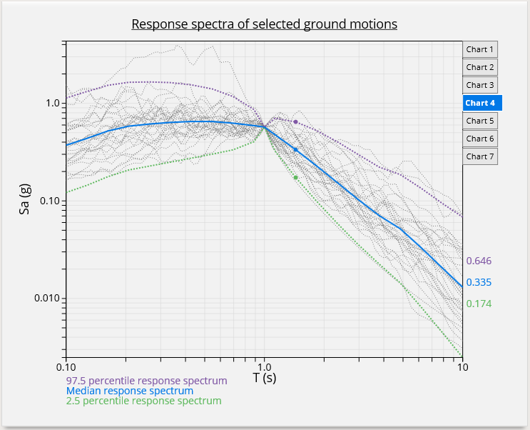

Faculty of Civil and Geodetic Engineering, University of Ljubljana (2014)
About:
From 2014 I work at Chair of Structural and Earthquake Engineering, Faculty of Civil and Geodetic Engineering, University of Ljubljana. My work revolves around database & software devolopment to provide new tools for complex and time consuming analyses.
Quick overview:
IKPIR Strong Motion Database
IKPIR database contains 9188 ground motion records from over 37 countries. Each record consists of 3 recorded ground motions (2 horizontal & 1 vertical component). For each component acceleration spectrum with 5% applied damping was calculated, which are also stored in database. Additionally there is a broad range of meta-data available for each record, ranging from earthquake associated data to data associated with recording location site.
Strong motion records were gethered from two sources:
- PEER ground motion database: http://ngawest2.berkeley.edu/
- RESORCE, reference database for seismic ground-motion prediction in Europe: http://www.resorce-portal.eu/
IKPIR database is designed in a way that alows independent queries from primary sources or queries from both, where possible duplicates are excluded.
-

-

-

- 
-

-

CGM application
Web application for selection of so called characteristic ground motions proposed by 3R method. It adopts 4 tier system architecture:
- Client tier - provides user interface and runs in clients' browser (HTML5, CSS3 & D3.js)
- Web tier - handles user requests and provides cross tier communication (PHP)
- Application tier - runs computational demanding tasks which are managed with HTCondor. (runs custom software devoleped in C, Tcl and OpenSees)
- Database tier - application is backed with IKPIR database that contains around 18.000 horizontal ground motion components.
Shake91-GUI
Shake91-GUI is a graphical user interface designed for Shake91 program, used for equivalent linear seismic response analysis of horizontally layered soil deposits.
Shake-GUI is written in C# (.NET). It enables quick soil profile and load case definitions. It enables multiple analyses with different loads for the same soil profile. Ground motion records can be imported localy from files or remotely from IKPIR Strong Motion Database. Original Fortran soure code of Shake91 was modified, so that now supports use of ground motion recordings with more than 8196 steps. Shake91-GUI also provides means to view and plot results.


Other
- OpenSees development - reimplementation of elements and materials (some developed by Jaka Zevnik) in to dynamic libraries for Linux and Windows.
- SMART DESIGN - Website for Seismic Analysis & Risk Targeted design.